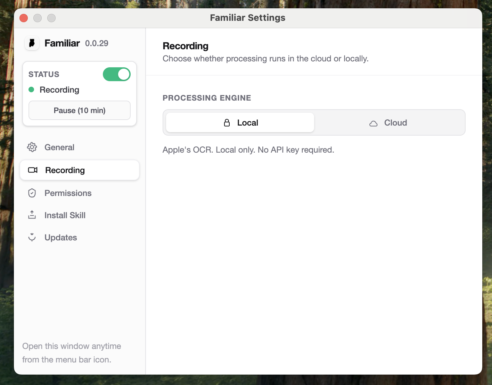

Local-first macOS menu bar app that captures your screen and extracts context for AI assistants.
Your data never leaves your Mac. All processing happens locally using Apple's Vision framework. No cloud uploads, no third-party servers.
Automatically captures screenshots and extracts text to markdown. Your AI assistant gets smarter over time as context accumulates.
Works with Claude, ChatGPT, and any AI that accepts markdown context. Export your work context instantly to any LLM.
No API keys required. Works with local OCR out of the box. Optional LLM provider integration for enhanced features.
Download the DMG file, open it, and drag Familiar to your Applications folder. Launch it from your Applications folder or Spotlight.
macOS will prompt you to grant Screen Recording permission. This allows Familiar to capture screenshots for context extraction.
Select a folder where Familiar will store captured screenshots and extracted markdown. This can be your project folder, Documents, or anywhere you prefer.
Sonoma, Sequoia, or newer required for Apple Vision OCR
Separate builds optimized for each architecture
Required to capture screenshots
Context typically 10-100MB per day depending on usage
Yes. Familiar follows a strict local-first security model. All data stays on your Mac. Screenshots and extracted text are stored locally in your chosen folder. The app has the same security profile as taking screenshots yourself - no cloud uploads, no third-party servers.
To check your Mac architecture:
Apple Silicon: M1, M2, M3, M4, or any M-series chip
Intel: Core i5, Core i7, Core i9, or mentions "Intel"
No. Familiar is designed for minimal resource usage. It runs quietly in the menu bar and only captures screenshots at intervals you configure. OCR processing uses Apple's native Vision framework, which is highly optimized. Most users won't notice any performance impact.
Yes. Familiar exports context as markdown files, which work with any AI assistant including Claude, ChatGPT, Gemini, and others. You can copy/paste markdown, use it with Claude Projects, or integrate via API. Optional LLM provider settings let you enhance the experience with automatic context injection.
The app itself is about 50MB. Context storage depends on your usage. A typical day might generate 10-100MB of screenshots and markdown. You can configure capture intervals and cleanup policies to manage storage. Old screenshots can be safely deleted - the extracted markdown is what matters.